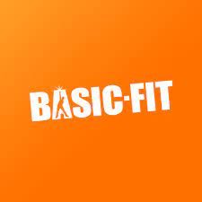
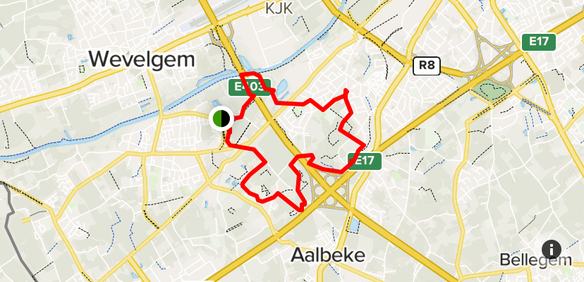
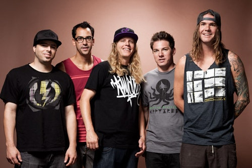

HOBBIES:
fitness
I started working out for my mental health, but have since been working out for a better body shape too.
I go to the basic fit in Marke, where most of my gym buddies go as well.

art
In high school I followed an art course, but I have been making art since I was a little kid.
Through those 6 years of high school I realised I love making art as a hobby.
Recently I started making digital art and I love it.
- My most recent painting I made for my grandma's 80th birthday

enjoying nature
I am one to often go out in nature.
I just love going to places where there is no human presence.
My dream is to one day travel the world in a skoolie before settling somewhere.
But I love the nature in my surroundings as well.
There is so much to be seen in "het Preshoekbos" where I live.

LIKES:
Favorite band / music:
My favorite band is called Dirty Heads.
I just love their laid back music

Favorite song:
My favorite song is Bones by Imagine Dragons
Film& & tv:
I don't watch too many movies or tv series, but there is one series that I really like,
And that is Stranger Things.